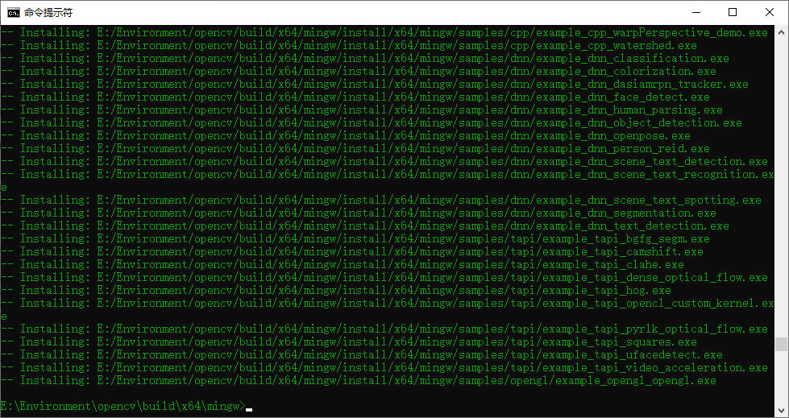

本文提供 Windows10 + VS Code 配置 C++ OpenCV-4.5.5 + Opencv_Contrib-4.5.5 开发环境的具体操作步骤。
软件版本
CMake-3.20.2:
cmake-3.20.2-windows-x86_64.msi
MinGW-W64
GCC-8.1.0:
x86_64-8.1.0-release-posix-seh-rt_v6-rev0.7z
OpenCV-4.5.5:
opencv-4.5.5-vc14_vc15.exe
OpenCV_Contrib-4.5.5:
opencv_contrib-4.5.5.zip
下载完后解压到同一个路径下，方便集中管理。opencv_contrib
包可以直接放进 opencv 文件夹内。
首先配置 MinGW 和 CMake 的系统环境变量：
1 | E:\Environment\mingw\bin |
在 cmd 中通过 cmake -version 和 gcc -v
验证是否配置成功：
编译安装 OpenCV
运行
E:/Environment/cmake/bin/cmake-gui.exe，配置opencv的
source code 以及编译文件存放路径，这里需要设置为
E:/Environment/opencv/build/x64/mingw
（需要手动创建这个文件夹）。
点击 Configure，在项目生成器下拉菜单中选择
MinGW Makefiles，并下方勾选
Specify native compiler，将 MinGw/bin 路径下的
gcc.exe 和 g++.exe 添加到编译器里。
下一步，将 opencv_contrib 包的路径添加到
OPENCV_EXTRA_MODULES_PATH 值中，勾选
BUILD_opencv_world 以生成一个opencv全局动态链接库，勾选
BUILD_EXAMPLES 生成示例程序。再点一次
Configure，确认没有与文件相关的红字 error 提示后，点击
Generate。
打开cmd，进入刚刚配置的编译路径
E:/Environment/opencv/build/x64/mingw，执行
minGW32-make -j12
编译完成继续执行 minGW32-make install

最后配置 OpenCV 的系统环境变量
VS Code 环境配置
在项目文件夹中创建子文件夹bin/，将opencv编译路径E:/Environment/opencv/build/x64/mingw/bin
中的libopencv_world455.dll和opencv_videoio_ffmpeg455_64.dll两个动态链接库文件复制到bin/文件夹中。
在 .vscode 路径下，分别配置三个 .json
文件：
launch.json
1 | { |
c_cpp_properties.json
1 | { |
tasks.json
1 | { |
测试程序
1 |
|
踩坑记录
CMake Configure: Couldn't reslove host name
问题记录
1 | CMake Warning at cmake/OpenCVDownload.cmake:202 (message): |
分析：需要在线下载并保存到
.../opencv/source/.cache 中的文件无效
- 根本原因：下载失败导致文件内容不完整/损坏 或 文件名中的MD5与其实际MD5不符
- MD5是一种数据唯一性标识，通过加密算法将数据内容提取为一个由32个16进制数组成的字符串，具有单向唯一性，即同一段原始数据不论时间地点，在相同的加密算法下，加密得到的字符串完全相同。但其有损加密的性质导致几乎无法由字符串完全还原本来的数据。
通用解决办法：打开日志文件
E:\Environment\opencv\build\x64\mingw\CMakeDownloadLog.txt
1 | #cmake_download "E:/Environment/opencv/sources/.cache/xfeatures2d/vgg/fccf7cd6a4b12079f73bbfb2174Sf9babcd4eb1d-vgg_generated_120.i" "https://raw.githubusercontent.com/opencv/opencv_3rdparty/fccf7cd6a4b12079f73bbfb2174Sf9babcd4eb1d/vgg_generated_120.i" |
文件内所有 cmake_download
后面的内容就是需要在线下载的文件，直接用浏览器打开后面的链接（没有梯子的话可以到
Repository
下载，但需要自己找版本匹配的文件），非文本类的文件会直接下载，文本文件打开后如图所示
点击右键-另存为（不要直接复制内容新建文件粘贴，会导致MD5对不上），保留其原本后缀。
将所有文件都下载完之后，打开cmd，通过
certutil -hashfile <filename> MD5
命令获取该文件的MD5，并与日志文件中的文件名MD5进行对比，一致的话将下载的文件按
MD5-filename 的格式重命名，例如
fccf7cd6a4b12079f73bbfb2174Sf9babcd4eb1d-vgg_generated_120.i
并将其移动到 .cache 内对应的 文件夹里。
注意：验证MD5不是必须的操作，但可以确保下载的文件是我们需要的文件，否则即使你从别人的经验贴里下载所谓实测可行的文件，MD5与日志中不相符，再怎么configure都会再报一样的错。
放上一张完整的 .cache 的目录树